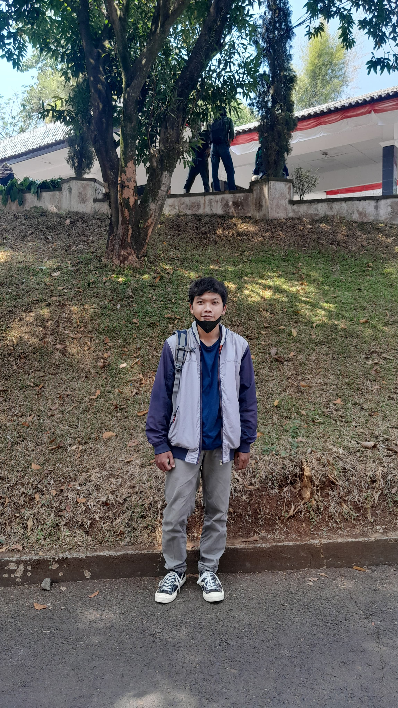

Pembuat konten yang fokus membuat artikel sejarah yang rapi dan mudah dipahami.
Dan desainer dan frontend yang membuat tampilan website menjadi lebih menarik dan elegan.
Pembuat konten yang fokus membuat artikel sejarah yang rapi dan mudah dipahami.
Dan desainer dan frontend yang membuat tampilan website menjadi lebih menarik dan elegan.
Tujuan dari pembuatan web ini adalah untuk memberikan informasi singkat, jelas, dan mudah dipahami tentang tokoh-tokoh berpengaruh dalam sejarah dunia. Melalui biografi, prestasi, dan perang terkenal yang mereka pimpin, pengguna dapat mengenal lebih dalam perjalanan hidup serta kontribusi besar yang mereka berikan.
Web ini juga dibuat untuk membantu pelajar, peneliti, maupun masyarakat umum memperoleh pengetahuan secara cepat tanpa harus mencari dari banyak sumber. Dengan tampilan yang sederhana dan responsif, web ini diharapkan dapat menjadi media belajar yang nyaman, menarik, dan mudah diakses oleh siapa saja.